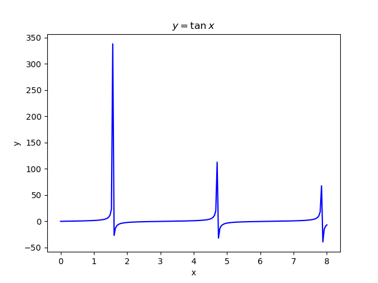
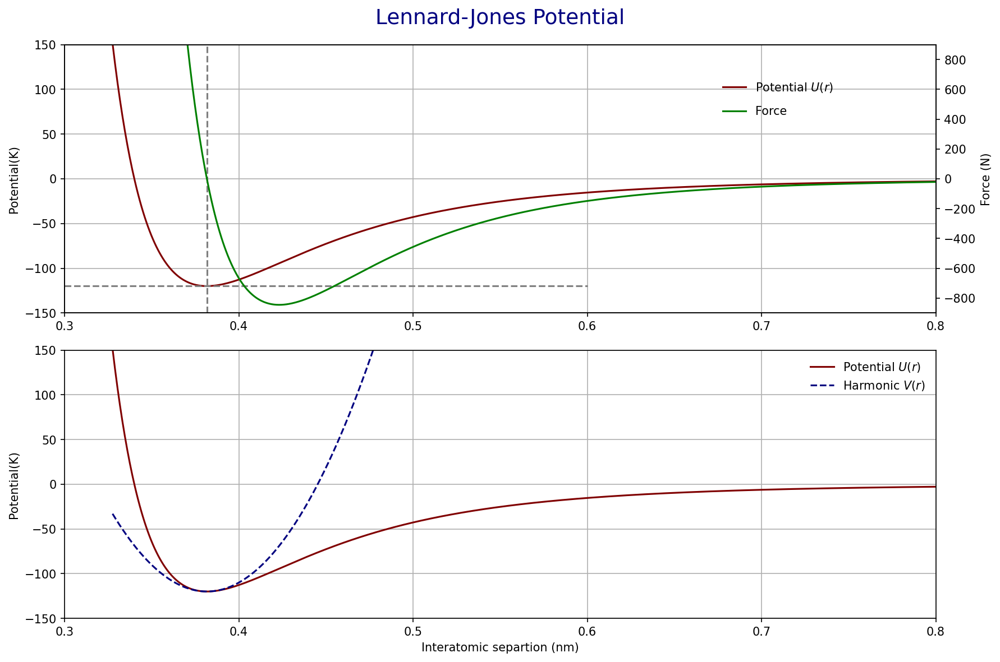

01| About Plotting
Introduction
This challenge involves two mini-challenges related to plotting. Enjoy
Mini-challenge 1: Dealing with Asymptotes

Plot a graph of \(y=\tan x\), together with its asymptotes and the axis. Label the asymptotes. Note that if you plot directly without processing the data beforehand, you’ll find that your plot doesn’t look quite like what you are familiar with from your secondary school mathematics, as seen in the figure below. This is because near the asymptotes, \(\tan x\) approaches \(\pm \infty\), resulting in weird looking, steep blue lines in your plot near the asymptotes. Ensure that your plot excludes the aforementioned lines.
Mini-challenge 2: Lennard-Jones Potential
Introduction
A simple model for the interaction potential between two atoms as a function of their distance, \(r\), is the Lennard-Jones potential given by:
\[ U(r) = \dfrac{B}{ r^{12}} − \dfrac{A}{r^{6}} \tag{1}\]
Where \(A\) and \(B\) are positive constants.
This was popular in the early days of computing because \(r^{−12}\) is easy to compute as the square of \(r^{−6}\). So, it was also sometimes called the 6-12 potential.

Tasks
Plot \(U(r)\) for Argon atoms where \(A = 1.024 \times 10^{−23}\) J nm\(^6\) and \(B = 1.582 \times 10^{−26}\) J nm\(^{12}\).
- Your plot should show the ‘interesting’ part of this curve, which tends rapidly to infinity for small values of \(r\) and zero for large \(r\).
- Consider swapping units by dividing \(A\) and \(B\) by the Boltzmann’s constant to measure \(U(r)\) in units of K.
What is the depth, \(\epsilon\), and location, \(r_0\), of the potential minimum for this system? Remember to think like a scientist, not a programmer! Indicate these values by drawing horizontal and vertical lines at these locations.
On the same figure show the interatomic force given by: \[ F(r) = −\dfrac{dU}{dr} = \dfrac{12 B}{ r^{13}} − \dfrac{6 A}{r^{7}} \tag{2}\]
For small displacements from the equilibrium interatomic separation (where \(F = 0\)), the potential may be approximated to the harmonic oscillator function,
\[ V(r) = \dfrac{1}{2}k(r-r_0)^2+ \epsilon \tag{3}\]
where
\[ k = \left|\dfrac{d^2U}{dr^2}\right|_{r_0}= \dfrac{156 B}{ {r_0}^{14}} − \dfrac{42 A}{{r_0}^{8}} \tag{4}\]
Plot \(U(r)\) and \(V(r)\) on the same figure but as a separate subplot.